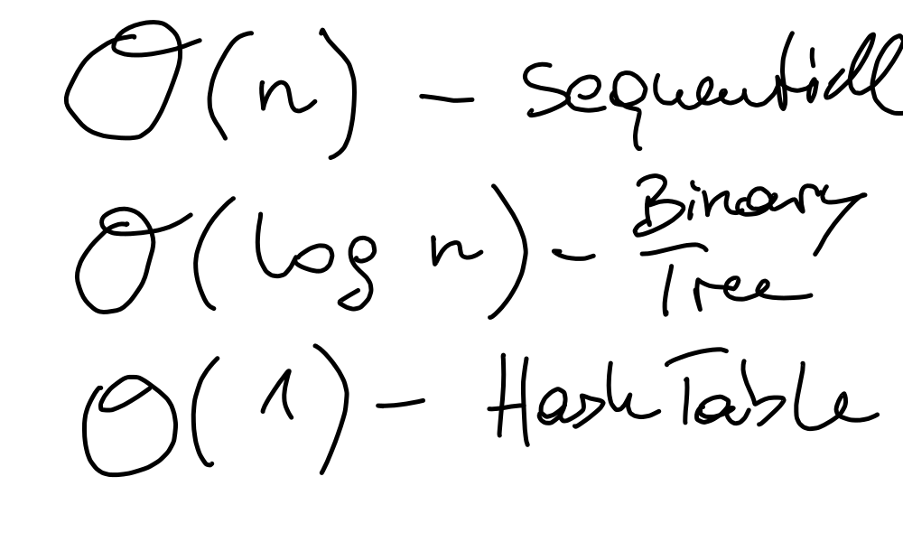
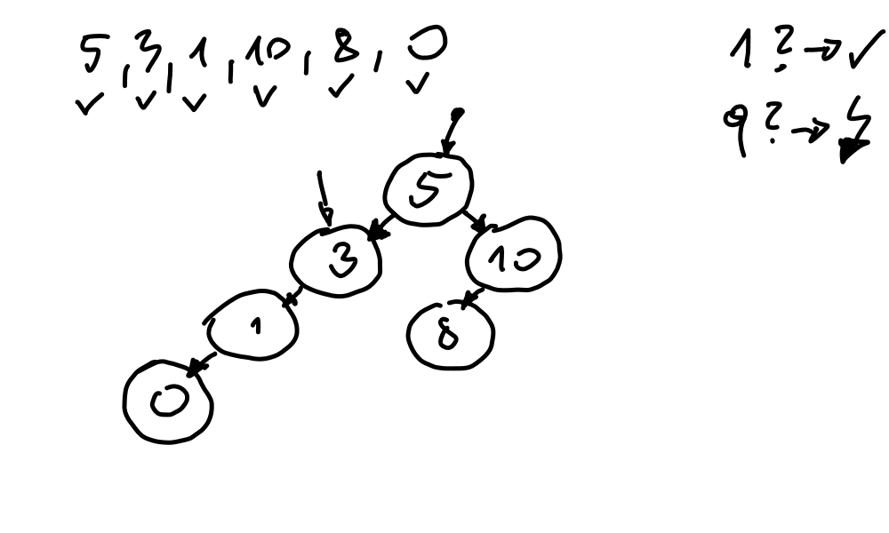
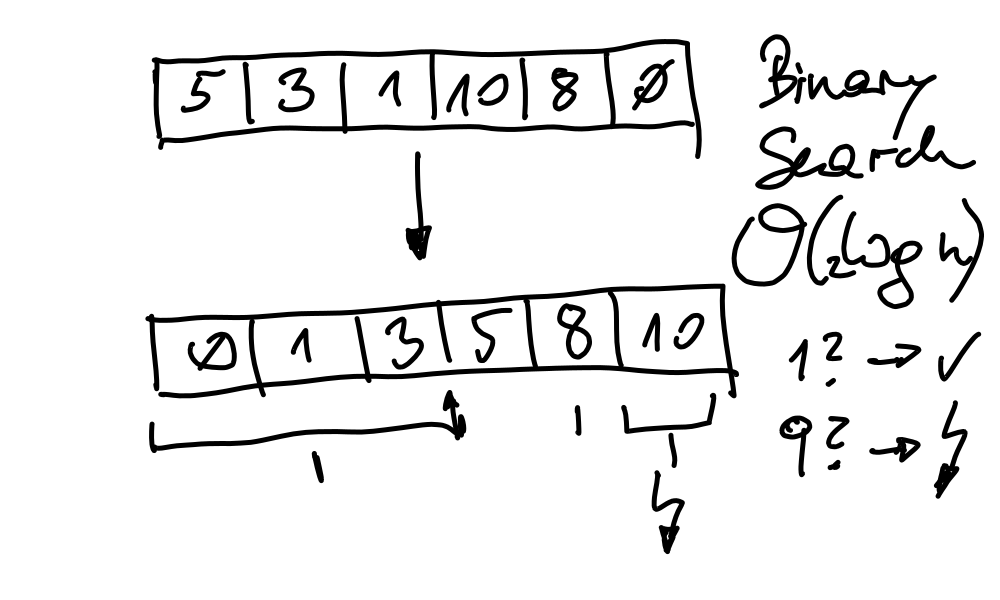
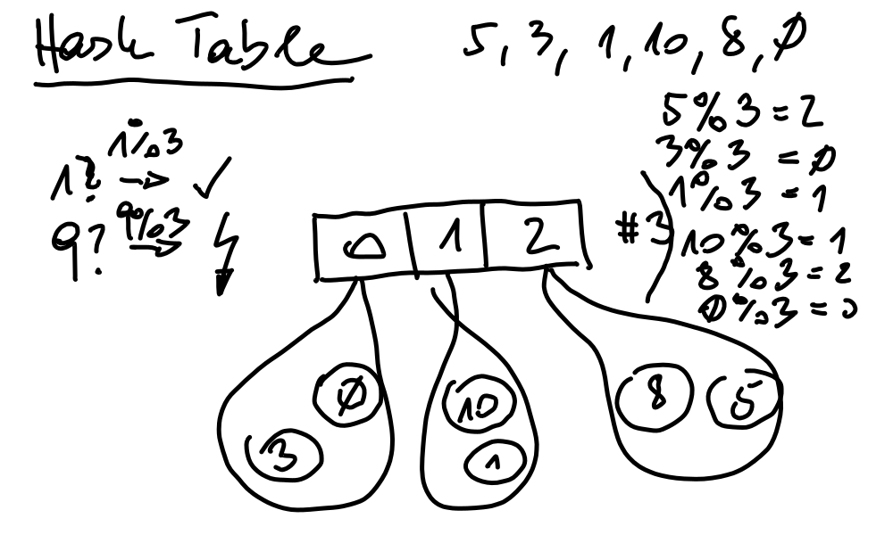

Python Basics (2022-02-23 - 2022-02-25)¶
Day 1¶
Day 2¶
Quick walkthrough of data structures and algorithms
 Big-O Notation
 (Unbalanced) binary tree
 Binary search in a sorted array
 Hash table (very basic)
Raymond Hettinger - Modern Dictionaries. Raymond Hettinger, explaining how dictionaries are implemented.
Exercise: Exercise: Digit to English Word (Solution: digit.py)
Control Flow and Iteration
Exercise: Exercise: Determine Maximum of Two Numbers (Solution: maximum.py)
Exercise: Exercise: Primeness (while) (Solution: prime-while.py)
Exercise: Exercise: Primeness (for) (Solution prime-for.py)
{kind=link}
{kind=link}
{kind=link}
{kind=link}
Day 3¶
Functions
Exercise: Exercise: Function: uniq()
Short generators demo?
Miscellaneous
File I/O
Into the wild: do something with GIS data
Further Information¶
Transforming Code into Beautiful, Idiomatic Python. Raymond Hettinger, reiterating his favorite phrase: “There must be a better way”. (Hettinger is a “Python Core Developer”.)
(He uses Python 2 though.)
Data Structures¶
Python Tutorial for Beginners 4: Lists, Tuples, and Sets, by Corey Schafer
Python Tutorial for Beginners 5: Dictionaries - Working with Key-Value Pairs, by Corey Schafer
Built in Super Heroes. David Beazley in an entertaining keynote to the “PyData Chicago 2016” conference. He has a number of very good and entertaining (and very advanced) videos. You have to spend an entire evening with him though.